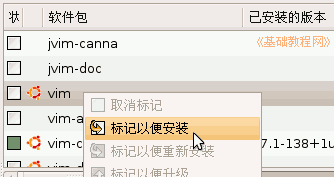
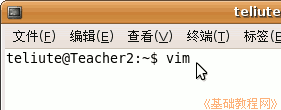
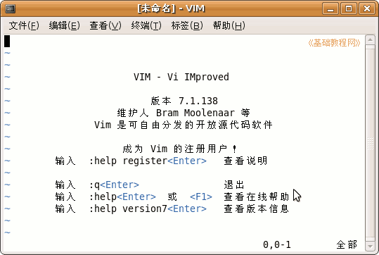
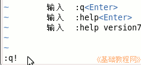
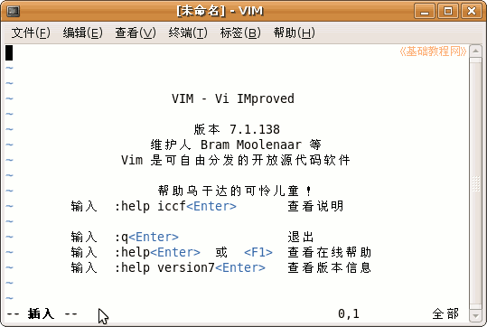
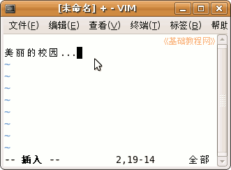
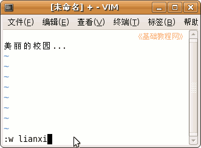
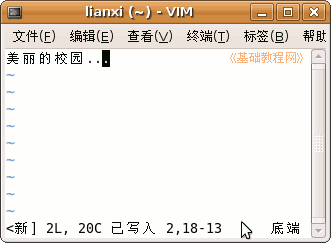
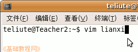
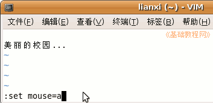

电脑操作基础
作者：TeliuTe 来源：基础教程网
十六、VIM 编辑器操作 返回目录 下一课在终端里可以使用vim编辑器，可以查看、编辑文本，下面我们来看一个练习；
1、安装和运行
1）点菜单“系统－系统工具－新立得软件包管理器”，搜索vim标记安装；

2）安装成功后，点“应用程序－附件－终端”，然后在终端里输入 vim 然后按回车键进入；

3）出来一个简介窗口，这时候就进入了vim界面；

4）按一下ESC键，然后输入 :q! (冒号q感叹号)退出，这是不保存退出；

输入的退出命令，显示在左下角，如果没有显示，就先按一下ESC键，进入命令状态；
2、输入和保存
1）进入vim界面后，按字母 i 键进入编辑模式，在窗口底部出来一个“插入”提示，这时候就可以输入文字了；

2）输入方法跟其他的文本编辑器相同，使用方向键移动插入点光标，使用退格键和del键删除字符；
试着输入一行文字：美丽的校园...

3）按一下ESC键，回到命令模式下，输入命令 :w lianxi (冒号w 空格 lianxi)，这是保存命令，后面的lianxi是保存的文件名；

4）检查一下没有错误，按回车键保存，下边提示已写入，窗口的标题栏上也出来文件名；
；
以后保存只要输入 :w (冒号w)就可以了；
5）保存完以后，输入命令 :q (冒号q)就可以退出vim窗口了，如果不让退出就先保存一下；
6）下次要打开这个 lianxi 文件，只要输入 vim lianxi 就可以打开它；
；
7）如果要使用鼠标来定位光标插入点，可以输入命令 set mouse=a ，然后就可以使用鼠标来移动光标了；

本节学习了在Ubuntu中使用vim的基本操作，如果你成功地完成了练习，请继续学习下一课内容；
本教程由86团学校TeliuTe制作|著作权所有
基础教程网：http://teliute.org/
美丽的校园……
转载和引用本站内容，请保留版权信息和本站链接。